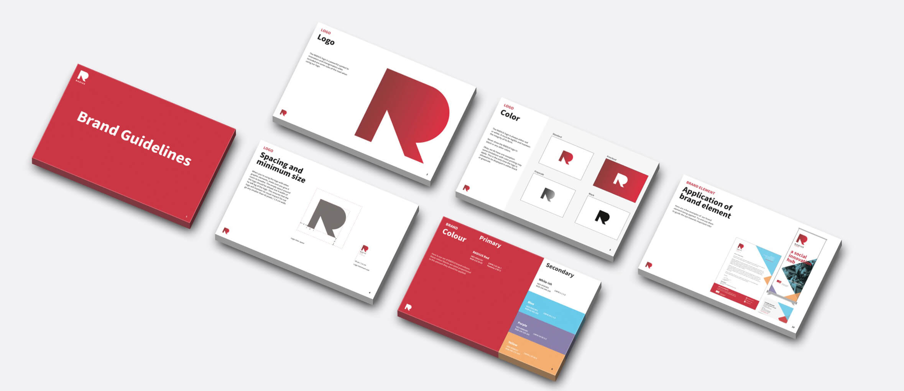
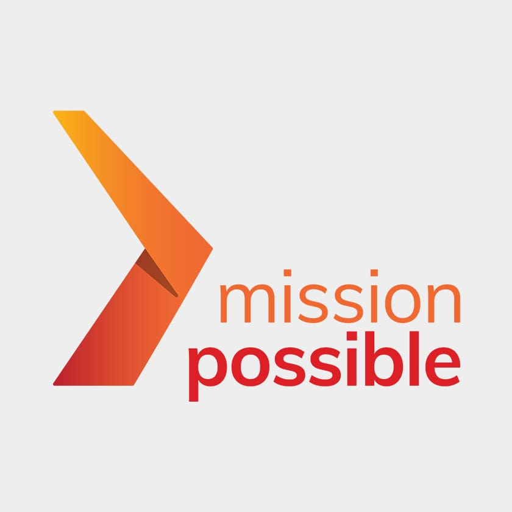

Railyard Lab - Dossier Creative
Hosted annually by Dossier Creative, Railyard Lab is an unique internship experience where a group of select interns with backgrounds in business & design run their own design studio, focusing on branding & strategy projects for real clients in the social impact space. Managed by Dossier Creative's Junior Strategist Cherihan Hassun and mentored by the entire Dossier team of strategists, designers, project managers & production specailists, my time at Railyard Lab taught me a lot about working in an agency as well as the impact of a well-crafted brand strategy.
As these projects have only recently launched, the extended write-up is not yet live. However, I'd be happy to answer any questions regarding the full design process & overall experience.
RADIUS SFU
Founded in 2013 as one of Vancouver’s first social innovation labs, RADIUS SFU has since dramatically expanded both its operations and service offerings. Now providing business mentorship and social venture support, the leadership team at RADIUS was finding it difficult to effectively engage audiences with its original brand. Railyard Lab was tasked with refreshing this brand while recognizing the brand equity that had developed over the years, and developing touchpoints across print and digital media.
My Role: UX & Content Strategist, Web Developer
My Contribution:
- worked with RADIUS leadership team to identify any changes in organizational values or direction
- conducted industry research and positioned brand relative to new competitors in social innovation
- restructured organizational offerings in a much improved information architecture
- responsible for the feasibility of implemented technologies and relevance to user experience
- developed all-new optimized website with full CMS functionality, including an additional request for drag-and-drop design functionality
- migrated previous site’s content, in particular 400+ blog posts that needed to be converted for new CMS

Team: Gabriel Hendry, Robbie Sebullen, Sarah Tong, Hussam Zbeeb
Timeline: 2 months
- Website
- Brand Touchpoints
Resources:
- Brand Positioning Map (STP Marketing Process)
- Experience Design: A Framework of Integrating Brand
- Google Ventures Sprints
- HTML/SASS/JS/PHP Development
What
A brand refresh and website creation for an organization that nurtures radical ideas into useful solutions - one that learns by doing and equips aspiring changemakers to drive economic transformation.

Original
New
How
By evolving existing brand and creative strategies to factor in RADIUS SFU’s shift towards thoughtful changemaking. Exercises in information architecture were undertaken that centered around organizing service offerings in a clear and relevant manner.
Impact

The strategies, coupled with in-depth user testing, set the foundation for the creation of a user-curated navigation of RADIUS’ offerings, supporting its mission to build solutions and support leaders in service of systems change .
Mission Possible
As a community economic development agency in Vancouver’s Downtown Eastside, Mission Possible equips individuals with a renewed sense of dignity through meaningful work. An opportunity existed to update Mission Possible’s brand to capture its evolution over the past 10 years.
Railyard Lab was tasked with refreshing their brand in order to representing the organization’s new direction, capturing their past while reflecting the future potential.
My Role: UX & Content Strategist, Client Services
My Contribution:
- worked with Mission Possible’s leadership team to understand their audience and organizational needs
- utilized Gantt charts to organize and manage team, ensuring deliverables were done ahead of schedule
- responsible for all working copy in content strategy & messaging
- point-of-contact for team
Resources:
- Brand Positioning Map (STP Marketing Process)
- Experience Design: A Framework of Integrating Brand
- Google Ventures Sprints
- Gantt Charts
What
A brand refresh for an organization championing a hand-up, rather than hand-out, approach to support the sustainable livelihoods of the residents of the Downtown Eastside.
Original
New

How
By creating brand and creative strategies that tackled Mission Possible’s multiple service offerings, which includes their employment readiness programs and social enterprises
Impact
A brand strategy, creative strategy, and variety of visual touchpoints that consolidated Mission Possible’s brand under one identity - an identity that spoke authentically to program participants as well as customers, employers, and donors.

refresh water lab
Globally, rising challenges with water management and governance - largely owed to urbanization, population growth, and climate change - require a new creative and collaborative process. With the ongoing modernization of the Columbia River Treaty, refresh was born to shift the paradigm of how solutions to water governance have long been developed.
With its diverse audience of policymakers, Indigenous representatives, and academics, refresh needed a brand that reflected its position as an informed yet neutral collaborative space for all parties. Railyard was tasked with creating an all-new brand, working with the leadership team to develop content strategy, social media strategy, as well as design digital and physical touchpoints.
My Role: Project Manager, UX & Content Strategist, Visual Designer, Web Developer
My Contribution:
- worked with refresh’s leadership team to understand the sensitive & complex subject matter at hand
- utilized Gantt charts to organize and manage team, ensuring deliverables were done ahead of schedule
- created multiple visual design proposals for refresh branding, including logo, website concepts, etc.
- responsible for all working copy in content strategy & messaging
- developed a website that was functionally easy for the team to use, while affording space for future growth
Team: Gabriel Hendry, Robbie Sebullen, Sarah Tong, Hussam Zbeeb
Timeline: 2 months
- Website
- Brand Touchpoints
Resources:
- Brand Positioning Map (STP Marketing Process)
- Experience Design: A Framework of Integrating Brand
- Google Ventures Sprints
- Gantt Charts
What
A brand birth for pioneers of a social innovation approach to the challenges of water governance.

How
By conducting a thorough landscape review, the Railyard 2018 cohort developed a brand identity rooted in positioning refresh as systems changemakers through facilitation of deep collaboration - collaboration between academics, legal experts, government bureaucrats, and First Nations representatives.
Impact

The strategies, coupled with in-depth user testing, set the foundation for the creation of a user-curated navigation of RADIUS’ offerings, supporting its mission to build solutions and support leaders in service of systems change.